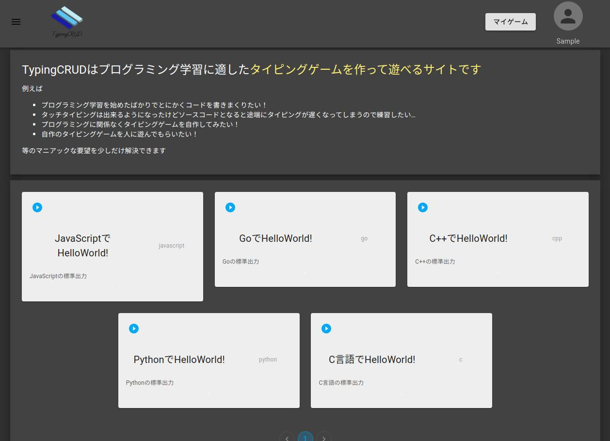

エンジニア向けタイピングゲームのサイトを作ってみた(前編)
2020/11/21 (最終更新日:2022/09/01)
エンジニア向けタイピングゲームのサイトを作ってみたのでその概要や使い方について書きます
まず、作ったサイトは↓です
https://typingcrud.it12.net (2022/09/01追記: URLを変更しました)
前編はとりあえずサイトの機能や使い方の説明、後編はエンジニアやその他プログラミングの知識がある人向けに技術的な細かい話
どういうwebサイトなのか？
まず特徴だけ書くと、
- 誰かが作ったタイピングゲームを遊べる
- 自分のオリジナルタイピングゲームを作れる
- 作ったタイピングゲームを公開できる
- 公開したゲームを他の人に遊んでもらえる
↓これ以降の機能はログインしないと使えない
需要があるかはさておきこんな感じです
ちなみに、スマホ対応はしていません、すいません
使い方
使い方ですが、まずトップページの下の方にこんな感じでカードが並んでます
カードの左上のアイコンをクリックするとプレイ画面に飛べるのでタイピングゲームが遊べます
プレイ画面はこんな感じで左に出てるコードをひたすら打っていく感じです
ここまでがログインせずに使える範囲です
これ以降はアカウントを作成している前提での説明です
ログインすると、さっき書いたような機能が使えます
まずはゲームの作成についてですが、上のバーのボタンとサイドメニューのボタンの両方から飛べるゲーム画面にある＋ボタンを押すと作成画面に入ります
ホーム画面からゲーム画面へ行くボタン
このボタンを押すとゲームを作成できる
ゲームの作成
ゲームを作ると、ゲームのリストがカード状に表示されます
編集と削除はカード右上のメニューから、ゲームプレイはさきほど同様左上のアイコンをクリック
作成した自分のゲーム
ゲームは作成されると1分後くらいにトップページに載ります、つまり作成したゲームは問答無用でトップページに公開されるので個人情報なんかを載せると普通に晒されるので注意
次に、ユーザー情報の変更の方法です
これは右上のユーザーアイコンをクリックして出てくるユーザー設定かサイドメニューのユーザー設定から飛べるページで変更できます
変更できるのはユーザー名、ユーザー画像、メールアドレスの3つです
メールアドレスを変えるとログイン時のメールアドレスも変更されるので注意
その他
疑問点があればこちらにあるフォームからお願いします
後編は技術的な込み入った面倒な話をしてるので興味がある方はどうぞ